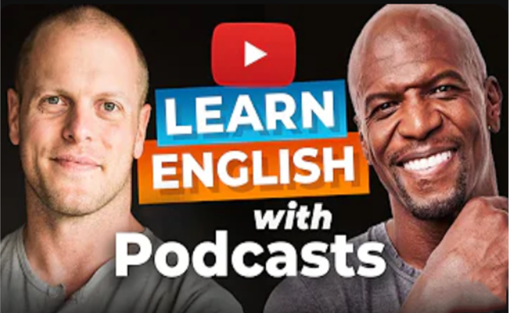
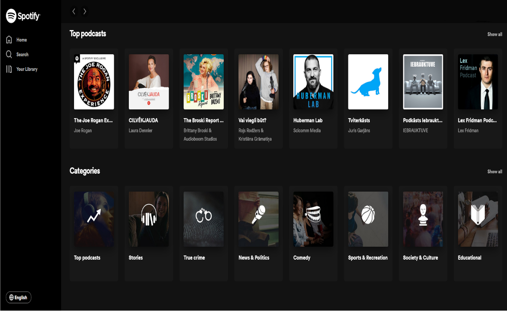
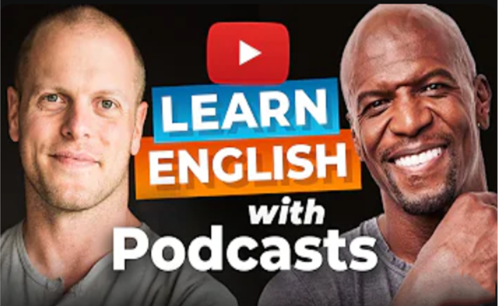
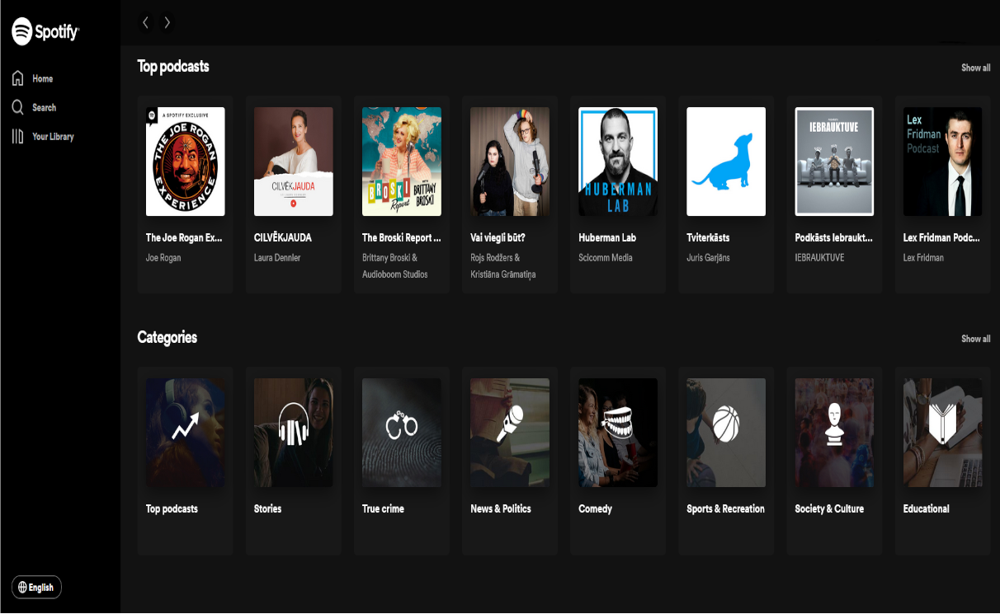

Podcasts
by Daniels<3
There are many great podcasts available for those who want to improve their English skills.
Here are some of the best ones:
1. "The English We Speak" by BBC - This podcast focuses on common phrases and
expressions used in everyday English conversations.
2. "English as a Second Language (ESL) Podcast" by Center for Educational Development -
This podcast is designed for intermediate and advanced learners who want to improve their
listening and comprehension skills.
3. "Better at English" by Lori Linstruth - This podcast offers a variety of topics,
including grammar, vocabulary, and idioms, to help learners improve their
English language proficiency.
4. "Luke's English Podcast" by Luke Thompson - This podcast covers a range of topics, including culture, news, and entertainment, and is great for intermediate and advanced learners who want to practice their listening and speaking skills.
5. "All Ears English" by Lindsay McMahon and Michelle Kaplan - This podcast focuses on American English, including slang, phrasal verbs, and idioms, and is great for learners who want to improve their conversational English skills.
These are just a few examples of the many great podcasts available to help you improve your English skills. It's important to find the one that best suits your needs and interests.
 


